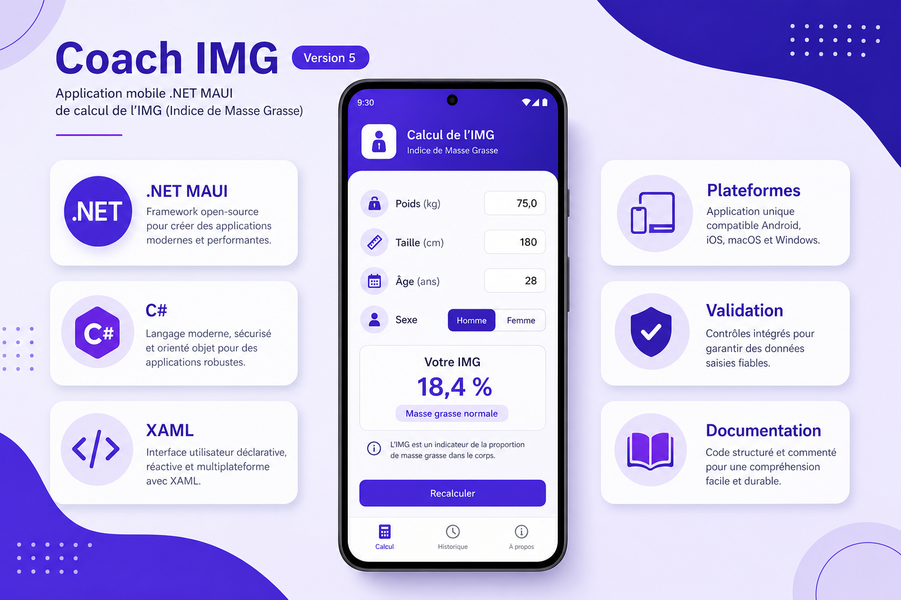

Coach IMG - Version 5
Passage à une base distante pour partager les données entre plusieurs appareils

Nouveautés de la Version 5 (base distante)
Par rapport à la V4, la V5 introduit une base de données distante accessible via une API. Le but est de ne plus limiter les données au téléphone local.
Les profils IMG peuvent être enregistrés côté serveur puis relus depuis un autre appareil. L'application conserve les fonctions précédentes (calcul, historique, navigation) mais ajoute une couche réseau.
Cette évolution répond à un besoin concret : éviter la perte de données lors d'un changement de téléphone et faciliter le suivi dans un contexte d'utilisation multi-support.
En résumé, la V5 fait passer le projet d'une logique locale à une logique connectée, plus proche d'une application utilisée en conditions réelles.
API distante
Lecture et écriture des profils IMG via des requêtes HTTP sécurisées
Synchronisation
Données cohérentes entre téléphone, émulateur ou autre session
Gestion réseau
Messages clairs en cas de serveur indisponible ou de timeout
Préparation sécurité
Base prête pour authentification et contrôle d'accès côté API
Extraits de code (appel API et synchronisation)
Exemple de service C# pour récupérer les profils depuis une API distante :
public async Task<List<ProfilDto>> GetProfilsAsync()
{
using var response = await _httpClient.GetAsync("api/profils");
response.EnsureSuccessStatusCode();
var json = await response.Content.ReadAsStringAsync();
return JsonSerializer.Deserialize<List<ProfilDto>>(json) ?? new();
}Exemple d'enregistrement du client HTTP et du service distant dans MauiProgram.cs :
public static MauiApp CreateMauiApp()
{
var builder = MauiApp.CreateBuilder();
builder
.UseMauiApp<App>()
.ConfigureFonts(fonts => fonts.AddFont("OpenSans-Regular.ttf", "OpenSansRegular"));
builder.Services.AddHttpClient<ProfilApiService>(client =>
client.BaseAddress = new Uri("https://api.mon-projet.fr/"));
builder.Services.AddSingleton<IProfilRepository, ProfilApiRepository>();
return builder.Build();
}Structure simplifiée côté application pour séparer UI, logique métier et accès distant :
CoachIMG/
Models/ProfilDto.cs
Services/ProfilApiService.cs
Repositories/ProfilApiRepository.cs
Views/CalculPage.xaml (+ .cs)
Views/HistoriquePage.xaml (+ .cs)
ViewModels/HistoriqueViewModel.csComparatif des versions (V1 → V5)
| Fonctionnalité | V1 | V2 | V3 | V4 | V5 |
|---|---|---|---|---|---|
| Calcul IMG | |||||
| Persistance JSON | |||||
| Persistance SQLite | |||||
| Menu dédié | |||||
| Base distante (API) |
Palette de couleurs
Cette version conserve la même palette visuelle que les versions Coach précédentes.